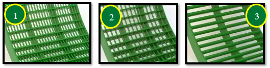
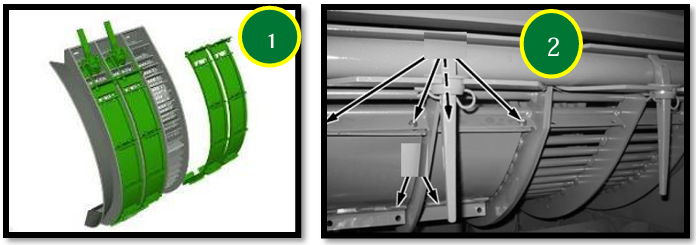
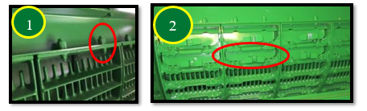
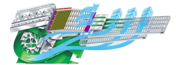

Réglage et inspection de la moissonneuse-batteuse
Hauteur du tambour et vitesse du convoyeur
| Position du tambour avant | Vitesse du convoyeur |
|---|---|
| Poignée vers le bas pour l'orge | 32 dents pour les conditions de récolte d'orge normales et difficiles |
| 26 dents dans des conditions sèches |

Vitesse du tambour d‘alimentation
| Conditions normales et difficiles | Conditions sèches et cassantes |
|---|---|
| Vitesse rapide | Abaissez la vitesse pour limiter l'endommagement de la paille et réduire la charge du caisson |

Contre-batteurs
Les contre-batteurs à petit fil nº 1 et à gros fil nº 2 sont recommandés pour les céréales et offrent les meilleures performances.
La configuration standard de la machine comporte :
- un contre-batteur à petit fil à l'avant,
- un contre-batteur à petit fil au milieu,
- un contre-batteur à grand fil à l'arrière.
Conditions de battage difficiles : Remplacez le contre-batteur du milieu par un contre-batteur à grand fil pour augmenter le battage.
Utilisez uniquement les contre-batteurs à mini barre ronde nº 3 dans des conditions difficiles lors de bourrages de contre-batteur et quand les réglages machines ne suffisent plus.
Reportez vous au livret d'entretien pour :
- la procédure de mise à niveau des contre-batteurs,
- le calibrage à zéro des contre-batteurs (de l'avant à l'arrière),
- l'écartement par rapport aux éléments de battage.

Plaques d'obturation du contre-batteur
Des plaques d'obturation de contre-batteur ne sont pas nécessaires en raison des performances de battage élevées du contre-batteur à petit fil et du rotor.
Si nécessaires, les plaques d'obturation de contre-batteur doivent être posés l'ordre suivant :
| SX60 et SX70 | SX80 et SX90 | |
|---|---|---|
| Positions | 1, 4, 5, 2, 3 | 1, 2, 3, 4, 5. |

Grilles de séparation
Assurez-vous que les entretoises de la grille de séparation nº 1 se trouvent sur le rail pour l'orge. Cela permettra d’avoir les grilles en position haute, afin d’assurer un flux constant de récolte via les organes de battage.
Utilisez les couvercles de grille de séparation nº 2 uniquement lorsque la répartition au caisson de nettoyage est inégale. Les couvercles de grille de séparation permettent de réduire la quantité de matière sortant du rotor sur l'extérieur.
Avant de poser les couvercles de grille de séparation, tentez d'obtenir une répartition uniforme du caisson de nettoyage en réglant les diviseurs des vis d'alimentation.

Batteur d'otons et déflecteurs supérieurs réglables (suivant équipement)
Le contre-batteur du batteur d'otons doit être en position fermée (céréales).
Si les céréales sont sujet à la “casse”, le contre-batteur fonctionne également en position ouverte (maïs).

Les déflecteurs supérieurs du rotor doivent être en position standard.
Conditions très sèches : les déflecteurs supérieurs du rotor peuvent être placés en position avancée pour améliorer la qualité de la paille et réduire la charge du caisson.
Réglages des organes de battage
Le rotor doit être réglé sur un régime rapide.
| Paramètres à régler | Réglage à effectuer | Conditions |
|---|---|---|
| Régime du rotor | 830 tr/min | Conditions sèches et cassantes |
| Régime du rotor | 930 tr/min | Conditions normales et difficiles |
| Écartement du contre-batteur | 25 mm | Conditions de battage sèches et faciles |
| Écartement du contre-batteur | 13 mm | Conditions normales et difficiles |
Ces recommandations de réglages constituent un point de départ et devront être encore optimisées.

Composants du caisson de nettoyage
La grille à otons universelle nº 1 et la grille à grain universelle nº 3 sont couramment utilisées.
Poser une grille à otons hautes performances nº 2 permet d'obtenir un échantillon de trémie plus propre et une réduction de la charge d'otons lorsque les performances sont limitées par le caisson de nettoyage.

Les diviseurs des vis d'alimentation nº 1 doivent être réglés pour obtenir une répartition uniforme du caisson de nettoyage.
Le relevage des tôles permet de réduire la quantité de matière à l'extérieur.
Poser une pré-grille à otons réglable nº 2 empêche l'accumulation de tiges dans la grille, lors de la récolte de colza et de tournesol.
Remarques : La pré-grille à ôtons réglable n'offre aucun avantage pour l'orge.
L'extension de pré-grille à otons nº 3, n'est pas livrée avec les machines ZX et ne doit pas être posée pour l'orge.

Réglages du caisson de nettoyage
| Paramètres à régler | Réglage à effectuer | Débit |
|---|---|---|
| Ouverture de la grille à otons | 16 mm | Débit normal (SX70 à 6 t/ha) |
| Ouverture de la grille à otons | 18 mm | Débit élevé (SX90 à 8 t/ha) |
Remarque : L'ouverture de la grille à otons doit être supérieure de 2 mm en cas de pose de la grille à otons hautes performances.
| Paramètres à régler | Réglage à effectuer | Débit/Conditions |
|---|---|---|
| Extension de la grille à otons | 5 mm | Sur terrain plat |
| Extension de la grille à otons | 10 mm | À flanc de coteau |
| Ouverture de la grille à grain | 6 mm | Débit normal (SX70 à 6 t/ha) |
| Ouverture de la grille à grain | 9 mm | Débit élevé (SX90 à 8 t/ha) |
Remarque : L'ouverture de la grille à grain doit être supérieure de 1 mm en cas de pose de la grille à otons hautes performances.
| Paramètres à régler | Réglage à effectuer | Débit |
|---|---|---|
| Régime du ventilateur | 950 tr/min | Débit normal (SX70 à 6 t/ha) |
| Régime du ventilateur | 1050 tr/min | Débit élevé (SX90 à 8 t/ha) |
Remarque : Le régime du ventilateur doit être supérieur de 100 tr/min avec une grille à otons hautes performances.
Suivant l'équipement, la pré-grille à otons réglable doit être réglée sur l'ouverture maximale.

Transport du grain
Les couvercles de vis transversale doivent être en position relevée.
Le déflecteur au niveau de la vis de remplissage de la trémie à grain peut être réglé pour modifier le chargement de la trémie à grain.
La position illustrée permet de charger la trémie à grain plus à droite.

Composants du système de résidus
Les palettes incurvées nº 1 doivent être posées sur chaque deuxième segment de l’épandeur à disques Advanced PowerCast™.
Le couvercle sous le tambour d'alimentation nº 2 ne doit pas être posé pour ne pas entraîner un enroulement lors de la récolte de petites céréales.
Un ralentisseur de chute nº 3 est disponible pour la configuration Premium afin d'améliorer la forme des andains et accélérer le séchage de la paille.

Réglages des résidus
Le régime du broyeur nº 1 doit être réglé sur élevé.
Si nécessaire, les contre-couteaux nº 2 doivent être enclenchés afin d'éviter toute consommation d'énergie inutile.
Poser une barre d'ancrage nº 3 sur le plancher du broyeur à coupe fine (44 couteaux) permet d'augmenter la qualité de broyage.

Le déflecteur de rafles nº 1 doit être en position relevée/céréales.
Les ailettes du déflecteur arrière ou du volet de broyage/andainage nº 2 sont réglables afin d'améliorer la répartition des résidus.